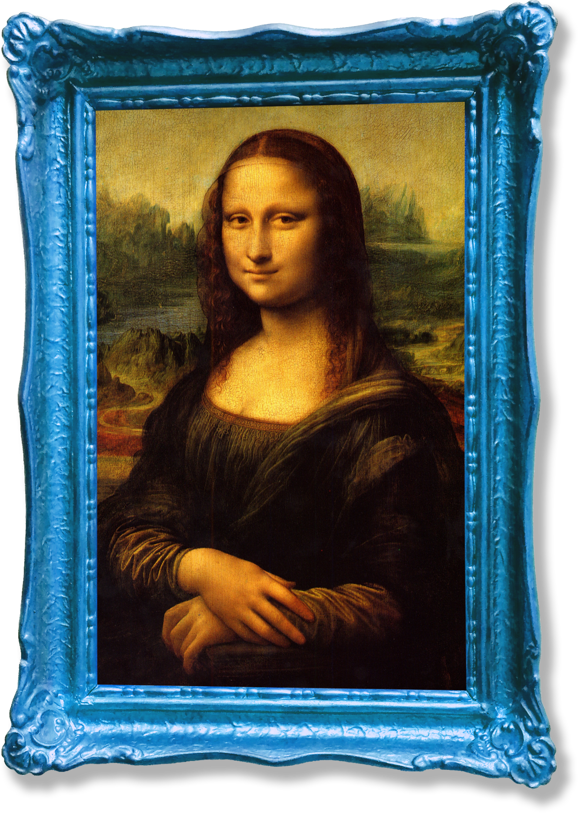

모방-하다
[…을] 다른 것을
본뜨거나 본받다.
- 남의 작품을 모방하다.
- 어린이는 어른의 행동을 모방하는 것을 즐긴다.
- 우리나라의 한문학은 처음에는 중국의 것을
모방하였으나 점차 독자적인 성격을 띠게 되었다.
하늘 아래
새로운 것은 없다.
문득 떠오른 나의 독창적이고 기발한 생각을 누군가가 먼저 표현해 놓은 경우가 드물지 않다. 이를 분명히 보여주는 인터넷에는 온갖 콘텐츠 들이 확대, 재생산 되고 있으며 특히 창작의 영역인 예술에서는 어디서 본 듯한 패러디와 오마주가 넘쳐난다. 나아가 표절 문제도 끊이지 않고 생겨난다.
오마주, 패러디
그리고 표절이란?
오마주는 원작에 대한 존경의 의미로 원작을 알아줬으면 하는것, 패러디는 원작 자체를 희화화 하거나 사회 현상 들을 풍자, 조롱, 비판 하는 것으로 원작을 알고 보면 재미있는 것이며, 표절은 타인의 지적 노동의 산물인 창작물을 훔치는 것으로 원작을 숨기는 것이다.
원작을 모방하는 오마주, 패러디, 표절.

원작
<모나리자>
위의 모나리자를 보듯, 유명 작품일수록 금방 들통나기에 표절작을 쉽게 찾아볼 수 없다.
오마주와 패러디 이 둘은 말 한마디로 구분지을 수 있기에 언뜻 보기에 비슷하지만, 중요한 것은 예시에서도 보이듯 누가봐도 원작을 떠올릴 수 있게 해야 하고 노골적으로 그것을 드러내는 것이다.

우리 주위의 모방
모방은 오마주, 패러디, 표절을 통해 그림, 사진, 영화, 뮤직비디오, 음악 등의 다양한 작품의 형태로 표현된다.
그 몇가지 작품들을 살펴보며 오마주, 패러디, 표절의 차이점을 더 자세히 알아보자.
표절과 저작권 침해는
어떻게 다른가요?
표절은 윤리적인 개념인 반면 저작권 침해는
법적인 개념이다. 저작권 침해는,
1. 연구자가 저작권자의 저작물을 무단으로 사용
2. 타인의 기존 저작물에 의거하여 생산
3. 두 저작물 사이에 실질적 유사성 존재
위 같은 조건들을 충족해야 한다. 저작권법상 저작물로
보호받지 못하는 아이디어를 표절한다거나 보호 기간이
만료된 저작물을 표절하는 경우 표절은 인정되지만
저작권 침해에는 해당되지 않는다.
오마주, 패러디, 표절을
어떻게 정확히 구분하나요?
정확히 구분짓는 기준은 없으며, 이들 간의 경계는 종이 한장 수준이다. 따라서 표절 논란이 되는 작품들은 표절이 아닌 오마주 혹은 패러디였다고 해명하는 경우가 종종 있다. 하지만 원작자가 이에 동의하지 않거나 피해를 호소한다면 저작권 침해가 될 수 있으므로, 오마주, 패러디를 하는 경우라도 원작자에게 사전에 충분히 알리고 동의를 구해야한다.
공정 이용(fair use)이란
무엇인가요?
특정 상황에서 저작권 소유자의 허가 없이 저작권
보호 자료를 재사용할 수 있음을 의미하는 법적 원칙이다.
1. 상업적 용도 또는 비영리 교육용
2. 저작권 보호를 받는 저작물의 성격
3. 저작물 전체 대비 사용된 부분의 양 및 가치
4. 저작권 보호를 받는 저작물의 사용이 해당 저작물의
잠재 시장과 가치에 미치는 영향을 고려해야 하며,
출처 표시는 기본이다.